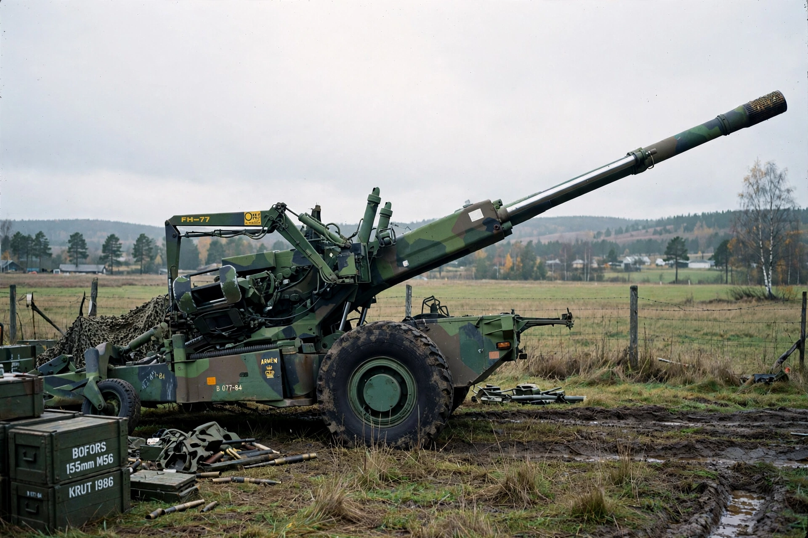

The Bofors scandal was a major political scandal in India and Sweden in the 1980s involving alleged kickbacks paid by Swedish arms manufacturer Bofors AB to secure a contract to supply 155 mm howitzers to the Indian Army.
| Bofors scandal | |
|---|---|
 | |
| Date | 1986–1987 revelations |
| Location | India, Sweden |
| Contract value | ~US$285 million |
In March 1986 India signed a deal for 410 FH-77B howitzers. In April 1987 Swedish Radio alleged Bofors had paid bribes to Indian politicians and officials via middlemen.
The scandal damaged Prime Minister Rajiv Gandhi and the Indian National Congress, contributing to their defeat in the 1989 general election. Names linked in reporting included businessman Ottavio Quattrocchi.
Investigations by the CBI and courts dragged on for decades with few convictions; cases were eventually closed or quashed. The affair became synonymous in India with corruption in defence procurement and led to reforms and long caution about artillery purchases.